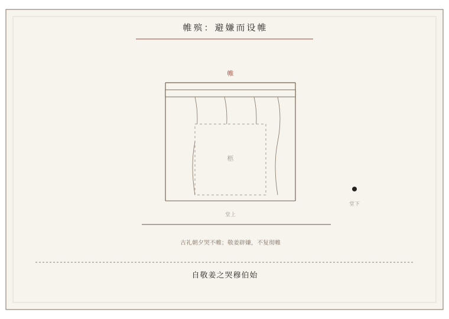

檀弓下 · 四·十三 · 第 338 课
帷殡，非古也。自敬姜之哭穆伯始也。
说什么事：哭殡之时设帷遮隔，这不是古礼。此礼自敬姜哭其夫穆伯开始。
落在哪一层：以「变例」量礼。论「一个人的避嫌如何成一条仪」。
为何编在此位：三百三十六、三百三十七两课论「辞」与「动」，此课论「变」。礼有常，亦有变；变有起处，有起处则可考。
【经】帷殯，非古也。自敬姜之哭穆伯始也。
【注】穆伯，魯大夫，季悼子之子公甫靖也。敬姜，穆伯妻，文伯歜之母也。《禮》：「朝夕哭，不帷。」
【疏】此一节论哭殡不合帷殡之事。／知穆伯是季悼子之子公甫靖者，《世本》文。知敬姜是文伯歜之母者，下文云：「文伯之丧，敬姜昼夜哭。」又《国语》云「敬姜自绩，文伯谏之」是也。／「朝夕哭，不帷」，是《杂记》文，以孝子思念其亲，故朝夕哭时，乃褰彻其帷也。今敬姜之哭穆伯，以辟嫌之故，遂朝夕哭，不复彻帷。／案《春秋》文十五年公孙敖之丧，「声已不视，帷堂而哭」。公孙敖亦是穆伯，此不云声已之哭穆伯始者，声已是帷堂，非帷殡也。声已哭在堂下，怨恨穆伯，不欲见其堂，故帷堂。敬姜哭於堂上，远嫌不欲见夫之殡，故帷殡。／案张逸答陈铿云：「敬姜早寡昼哭，以辟嫌帷殡，或亦辟嫌，表夫之远色也。」
帷殡 以帷幕遮隔殡所。殡为停柩之处。
非古也 非古礼所有。
敬姜 鲁大夫穆伯之妻，文伯歜之母。以守礼见称于《国语》《礼记》。
穆伯 鲁大夫，季悼子之子，名公甫靖。
褰彻 揭起、撤去。褰，揭也。
帷堂 遮隔堂。与帷殡不同：一在堂，一在殡。
声已 公孙敖之妻。公孙敖亦谥穆伯。
哭殡时设帷遮隔，不是古礼。这做法从敬姜哭她的丈夫穆伯开始。
此章只两句，一断一溯。断的是「非古」，溯的是「自谁始」。
古礼朝夕哭不设帷，为的是孝子要看见亲。敬姜哭夫，偏偏扯起帷来。礼书不以为非，只记明：这不是古礼，是她开始的。
一句「自……始也」，等于给一条变例立了案：事有其人，人有其故，故可稽。
第一层 「非古也」不是贬辞 《礼记》中「非古也」屡见，多是「此非古所有，而后世行之」的记录语气，非判语。
非古不等于非礼。古礼是一层，后世之变又是一层；两者并存，记明来源，便不算乱。
此章的写法，正是礼学最老实的一种写法：不替你辩护，也不替你定罪，只说这是从谁开始的。
第二层 敬姜之故：避嫌 疏引张逸答陈铿：「敬姜早寡昼哭，以辟嫌帷殡，或亦辟嫌，表夫之远色也。」
敬姜早寡而哭夫，昼夜在殡侧。设帷不是为遮泪，是为遮身——把「哀」与「色」分开。
这一层极细：礼所防者，常常不是恶，是「看起来像」。敬姜所避者，也不是自己的心，是他人之口。
第三层 疏辨声己：帷堂与帷殡之别 同为鲁之穆伯，声己（公孙敖之妻）亦曾「帷堂而哭」，此章却不以她为始。
疏断得清楚：声己哭在堂下，怨恨其夫，不欲见其堂，故帷堂；敬姜哭在堂上，远嫌不欲见夫之殡，故帷殡。
同一动作（设帷），动机两种：一为怨，一为嫌。礼书取其一为「始」，是因为「嫌」这一层才需要立仪；「怨」只是私情。
第四层 礼的生成方式：从一个人的难处起 此章透出一条重要消息：礼不是自上颁下的条文，多自下长出的应对。
一个人遇一难处，行一权宜；后人觉其合宜，遂相沿；相沿既久，遂成一条仪。礼书回头记一句「自某人始」，便是给它一个出身。
知礼之出身，则不迷信礼；不知出身，则以礼为天降，遇变则无所措。
第五层 今日之用：避嫌也是一种礼 今人论「避嫌」，多以为小气、多疑、迂。
此章所见，避嫌是礼的正当来源之一：在一种容易被误读的处境里，主动加一道遮隔，使他人无从误读。此非怯，是「不以己之坦然，强人之信」。
与今日何干 今日多有「男女同事、师生、上下之间」的分寸之争。此节给的不是禁令，是一个方法：当处境容易被误读时，加一道「帷」。帷不是承认有罪，是免去解释。
| 左 | 右 |
|---|---|
| 帷殡 | 以帷遮隔殡所 |
| 非古也 | 古礼朝夕哭不帷 |
| 敬姜 | 穆伯之妻，文伯之母 |
| 穆伯 | 鲁大夫公甫靖 |
| 辟嫌 | 设帷之故 |
| 远色 | 表夫之远色 |
| 声己帷堂 | 怨而不见其堂 |
| 敬姜帷殡 | 嫌而不见其殡 |
| 自某始 | 变例之出身 |
画一处堂上与堂下之分，视点平视。堂上置一重帷幕，帷自梁垂下，帷后隐约一具柩形（只画轮廓，不画细节）；帷前一人跪坐，只画背与衣，不画人面。堂下另有一人立着，与帷相隔一段阶石，示「帷堂」之别。帷幕上一道细褶，赭色只用在帷的系带。
